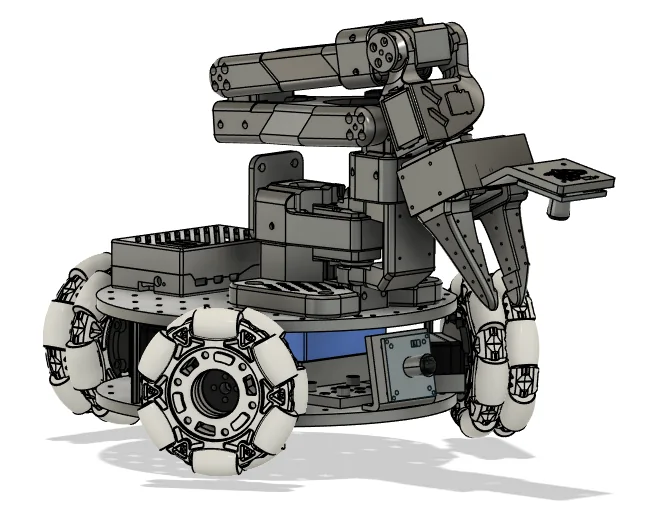

Open-source robotics · SIGRobotics, UIUC
LeKiwi: low-cost holonomic mobile manipulator
A three-wheel holonomic mobile manipulator that brings the cost of a robotics research platform under $500, now an official Hugging Face LeRobot platform.

Challenge
Mobile manipulators are too expensive for most students and small labs.
Approach
A three-wheel omni base carrying an SO-ARM arm, designed through a three-month sprint; V2 moved to Dynamixel servos.
Outcome
Under $500 to build, 1,480+ GitHub stars, 100s of community builds, and an official Hugging Face LeRobot platform.
- My role
- Lead hardware designer · Executive Chair, SIGRobotics
- Timeline
- 2024 – Present, starting with a 3-month design sprint
- Partners
- Hugging Face LeRobot, ROBOTIS
- Tools
- Fusion 360, 3D printing, DFM/DFA, MuJoCo, SO-ARM101
- GitHub stars, with 160+ forks and 100s of community builds
- 1,480+
- Total bill of materials
- <$500
- Corporate sponsorship secured
- $40K+
Problem
Mobile manipulators make good research platforms, but their cost keeps them out of reach for most students and small labs.
The goal was a platform cheap enough to build at home, without giving up the capability that makes it useful for research.
Approach
I owned the complete hardware architecture through a three-month design sprint: component selection, chassis CAD in Fusion 360, power, and actuation.
A three-wheel omni base gives holonomic motion: the robot can drive in any direction and turn independently, so the arm can be placed without repositioning maneuvers.

- Wrist cameraGives the arm a close-up view of what it is grasping
- GripperAt the end of the arm, which is mounted at the front of the base
- Onboard computerSits on the perforated chassis plate
- Omni wheelOne of three, for holonomic motion
Design iterations
The second-generation V2 was rebuilt around Dynamixel servos, with open-source integration work alongside Hugging Face LeRobot and ROBOTIS.


Fusion 360 model of the robot
The built robot

3D-printed motor mount

Servo seated in its mount

Omni wheel on the drive module

Base plate with three drive modules at 120°


Testing
Validated in MuJoCo simulation and on hardware: kinematics, control response, and sensor and actuator integration.
V2 demo run
The Dynamixel-based V2 drives across the floor and picks up objects with its arm. The footage is unedited and plays in real time.
- Build
- LeKiwi V2, Dynamixel servos
- Shows
- Holonomic driving, arm grasping
- Length
- 1:00, with sound
Community demo
A community-built LeKiwi running in the Hugging Face office.
- Build
- Community LeKiwi
- Length
- 0:45, with sound
Results
- 1,480+ GitHub stars, 160+ forks, and 100s of community builds
- Integrated into Hugging Face’s LeRobot ecosystem as an official platform
- Sub-$500 total BOM: the lowest-cost open-source mobile platform in its class
- $40,000+ in corporate sponsorship secured

Remotely teleoperated with an SO-100 leader arm

Hugging Face demo of the LeKiwi platform

SO-ARM leader arm next to LeKiwi for teleoperation